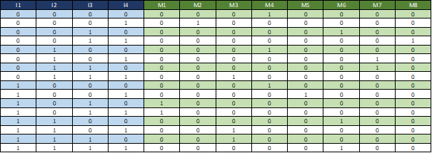
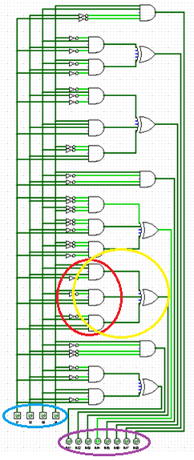
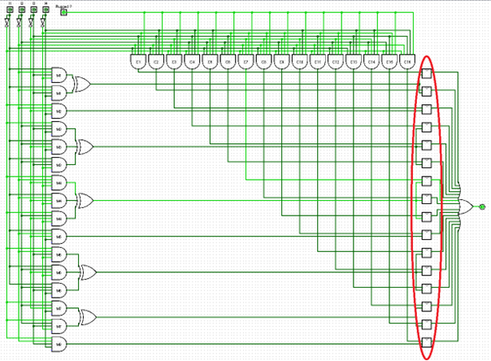
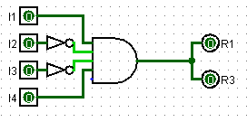
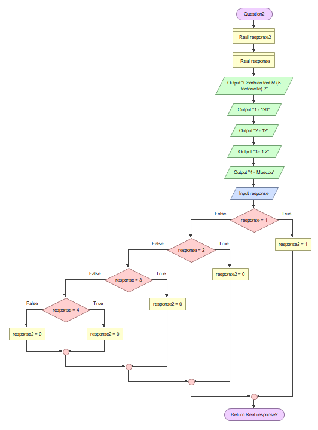
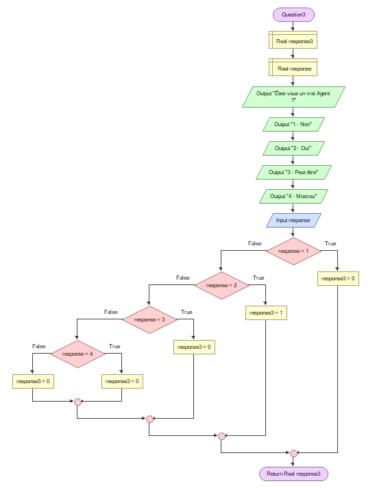
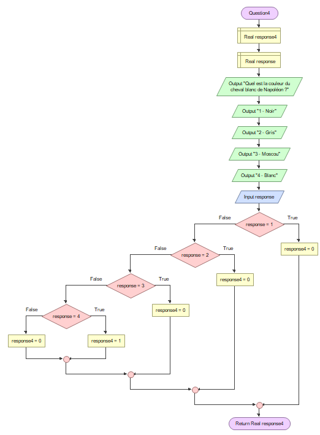

Coffre-fort
Arduino & C++ - 2021
Le context de ce projet était qu'une agence d'espionnage voulait améliorer le système de sécurité de leur coffre-fort. Pour ce projet, nous avions à disposions une carte Arduino Uno, des résistances diverses, des LEDs, des transistors, des interrupteurs, des breadboards et un générateur 20V.
Le système de sécurité devait identifier le modèle d'une carte électronique de chaque agent, déterminer le niveau de sécurité en fonction de celui-ci, l'appel des différents mécanismes d'authentification, et l'ouverture du coffre.
Etant donné la restriction de temps que nous avions, nous n'avons réaliser que 5 mécanismes d'authentification sur la totalité des agents possible.
LES CIRCUITS LOGIQUES
Ce schéma sert de context. Il existe quatre entrées qui sont les interrupteurs I1, I2, I3 et I4. Il existe également huit modèles pour les différentes cartes. Voici donc la table de vérité qui en ressort :
Voici quelques petites explications, sur l'image ci-contre, on y voit une porte logique "ET" qui a cinq entrées qui correspondent aux interrupteurs (le cercle rouge) et une entrée qui correspond à si la carte est activée ou pas (le cercle vert).
Chaque carte correspond à un enchaînement d'interrupteurs unique afin d'avoir plus de sécurité.
Circuit logique interne du coffre
Dans le circuit interne du coffre, selon la combinaison d'interrupteurs, c'est-à-dire, selon la carte sélectionnée, le circuit logique indique à quel modèle elle correspond.
Circuit logique du comparateur de sorties
Le schéma suivant est un circuit logique permettant de comparer les sorties. Comme sur le circuit précédent, on commence par faire la combinaison d'interrupteurs, ensuite le système ba détecter à quelle carte correspond la combinaison. La porte "ET" afin de vérifier si la carte est insérée. En parallèle, on fait correspondre les combinaisons avec leur modèle et enfin on utilise des comparateurs qui comparent une carte avec un modèle (le cercle rouge).
LES CIRCUITS ELECTRONIQUES
La carte Arduino a pour rôle d'identifier un modèle en fonction de la tension d'entrée qu'il va recevoir. En fonction de celle-ci, la carte Arduino va permettre à l'agent de rentrer son code sur le digicode. Nous avions remarqué que plus la résistance équivalente était élevée, plus la tension de sortie diminuait.
Schéma logique simplifié de la carte
Pour le schéma logique simplifié de la carte, nous avons eu comme carte à implémenter celle avec les interrupteurs I1 et I4 avec les résistances R1 et R3. Le nombre d'entrée sera donc de quatre interrupteurs et de deux sorties, les résistances. Les interrupteurs I2 et I3 ont une porte "NON" pour que les interrupteurs soient égaux à 0 tout en activant la porte "ET" si les deux autres interrupteurs sont actifs.
Circuit électronique de la carte
Afin de pouvoir créer le circuit électronique de la carte, il a fallu que nous cherchions comment
traduire des portes logiques en circuit électronique.
La porte "NON" se traduit par un transistors et de deux résistances. Si le transistor reçoit du
courant à sa base, le transistorlaisse passer le courant du générateur directement vers la mise à
terre et donc ne passe pas vers les autres transistors de la porte "ET".
La porte "ET" se traduit par la combinaison en série d'autant de transistors qu'il y a d'entrée dans
la porte "ET". Ainsi, si l'un des transistors ne reçoit pas de courant à sa base, le courant ne
passe pas vers les prochains.
Légende :
- L'encadré rouge représente la traduction de plusieurs portes logiques non.
- L'encadré bordeaux représente des transistor qui quelque soit le passage de courant ne renvoie de
courant à sa résistance associé.
- L'encadré jaune désigne les entrées délivrant ou non un courant électrique.
- L'encadré orange désigne les sorties délivrant ou non un courant électrique.
- L'encadré vert désigne les deux transistors faisant passer le courant à condition que les
interrupteurs I1 et I4 soit en position fermés.
- Les encadrés violet désignent respectivement la borne positive d'un générateur et la borne
négative.
Circuit électronique du coffre
Afin de produire le circuit électrique complet du coffre, il nous a fallu reproduire le circuit du coffre qui nous était fourni sur le logiciel LTspice. Par la suite, nous avons intégrer le circuit de la carte ce qui nous donne ceci :

Légende :
- L'encadré vert désigne la borne positive et négative d'un générateur.
- L'encadré jaune désigne les interrupteurs.
- L'encadré rouge représente le circuit électrique de la carte.
- L'encadré jaune foncé représente les différentes DEL (diode électroluminescente).
- L'encadré noir représente les différentes résistances.
- L'encadré orange représente la DEL permettant d'affirmer ou non la présence de courant électrique dans
la carte Arduino.
- L'encadré bleu désigne la résistance R5 permettant d'influer sur la tension en entrée de la carte
Arduino.
- L'encadré violet désigne la carte Arduino.
LES LOGIGRAMMES
Nous avons réalisé divers algorithmes sous forme de logigrammes de chaque mécanismes d'authentification sous forme de questions, ensuite l'algorithme principal du système d'authentification du coffre décrivant le processus complet (depuis l'identification du modèle de carte, la détermination du niveau de sécurité, l'appel aux différents mécanismes d'authentification et enfin l'ouverture du coffre).
Logigrammes des mécanismes d'authentification questions
Premier mécanisme d'authentification
Le premier algorithme du mécanisme d'authentification est une première question avec quatre propositions de réponses. L'agent aura donc juste à choisir parmi la réponse 1, 2, 3 ou 4. La première question est donc "Quelle est la capitale de la France ?", les différents choix étaient "Paris", "Marseille", "Lille" ou "Moscou".
Pour cette algorithme, on commence par déclarer nos deux premières variables qui sont la variable "response1" et la variable "response". Le programme enverra cinq message dont la question et les quatre réponses possibles. L'agent indique ensuite la réponse qui lui paraît être la bonne. Par la suite, quatre fonctions "si" vérifirons la réponse entrée. Dans ce cas, la bonne réponse est la réponse 3, "response = 3", le programme attribuera "response1 = 1" mais si la réponse n'est pas correcte, alors nous aurons "response1 = 0" et donc le programme affichera une erreur.
Second mécanisme d'authentification
Le second algorithme du mécanisme d'authentification est une deuxième question avec quatre propositions de réponses également. L'agent aura donc juste à choisir parmi la réponse 1, 2, 3 ou 4. La première question est donc "Quel est le résultat de 5! ?", les différents choix étaient "120", "12", "1.2" ou "Moscou".
L'explication est la même que pour la fonction de la première question sauf qu'au début on déclare "response2". La question et les réponses sont différentes mais le principe reste le même. Dans cette fonction, la bonne réponse est la réponse "120" donc l'agent doit indiquer la réponse 1 afin que "response2" soit égale à 1.
Troisième mécanisme d'authentification
Le troisème algorithme du mécanisme d'authentification est encore une question avec quatre propositions de réponses. L'agent aura donc juste à choisir parmi la réponse 1, 2, 3 ou 4. La première question est donc "Êtes-vous un vrai Agent ?", les différents choix étaient "Oui", "Non", "Peut-être" ou "Moscou".
L'explication est la même que pour la fonction de la première question sauf qu'au début on déclare "response3". La question et les réponses sont différentes mais le principe reste le même. Dans cette fonction, la bonne réponse est la réponse "Oui" donc l'agent doit indiquer la réponse 2 afin que "response2" soit égale à 1.
Dernier mécanisme d'authentification
Le dernier algorithme du mécanisme d'authentification est une quatrième question avec quatre propositions de réponses. L'agent aura donc juste à choisir parmi la réponse 1, 2, 3 ou 4. La première question est donc "Quelle est la couleur du cheval blanc de Napoléon ?", les différents choix étaient "Noir", "Blanc", "Moscou" ou "Gris".
L'explication est la même que pour la fonction de la première question sauf qu'au début on déclare "response4". La question et les réponses sont différentes mais le principe reste le même. Dans cette fonction, la bonne réponse est la réponse "Oui" donc l'agent doit indiquer la réponse 4 afin que "response2" soit égale à 1.
Mécanisme d'authentification par identification
Premier mécanisme d'authentification
Le premier algorithme du mécanisme d'authentification est une première question avec quatre propositions de réponses. L'agent aura donc juste à choisir parmi la réponse 1, 2, 3 ou 4. La première question est donc "Quelle est la capitale de la France ?", les différents choix étaient "Paris", "Marseille", "Lille" ou "Moscou".
Pour cette algorithme, on commence par déclarer nos deux premières variables qui sont la variable "response1" et la variable "response". Le programme enverra cinq message dont la question et les quatre réponses possibles. L'agent indique ensuite la réponse qui lui paraît être la bonne. Par la suite, quatre fonctions "si" vérifirons la réponse entrée. Dans ce cas, la bonne réponse est la réponse 3, "response = 3", le programme attribuera "response1 = 1" mais si la réponse n'est pas correcte, alors nous aurons "response1 = 0" et donc le programme affichera une erreur.